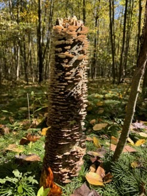
Pennsylvania · 2024
Bracket fungus on deadwood
朽木上的多孔菌类真菌
Bracket fungus on deadwood (Polyporales sp.) · Pennsylvania forest · 2024
朽木上的多孔菌类真菌（Polyporales sp.）· 宾夕法尼亚森林 · 2024
A small archive of field encounters, biodiversity observations, travel memories, and moments that shaped my way of seeing nature.
这里记录一些野外观察、生物多样性瞬间、旅行记忆，以及那些影响我理解自然的画面。

Bracket fungus on deadwood (Polyporales sp.) · Pennsylvania forest · 2024
朽木上的多孔菌类真菌（Polyporales sp.）· 宾夕法尼亚森林 · 2024
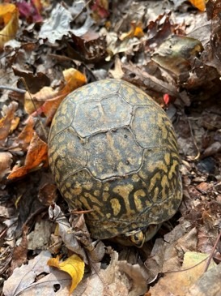
Eastern box turtle (Terrapene carolina carolina) · Pennsylvania forest · 2024
东部箱龟（Terrapene carolina carolina）· 宾夕法尼亚森林 · 2024
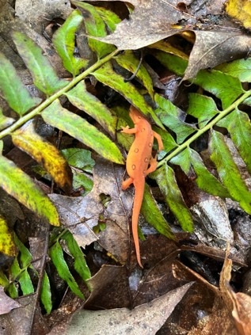
Red eft / Eastern newt (Notophthalmus viridescens) · Pennsylvania forest · 2024
红螈 / 东方蝾螈陆生幼体（Notophthalmus viridescens）· 宾夕法尼亚森林 · 2024
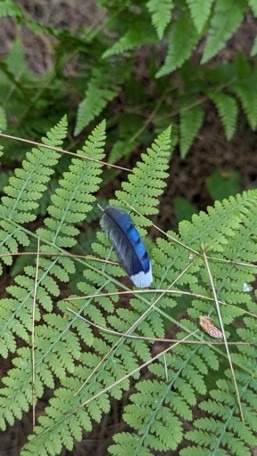
Blue jay feather (Cyanocitta cristata) · Pennsylvania forest · 2024
蓝松鸦羽毛（Cyanocitta cristata）· 宾夕法尼亚森林 · 2024
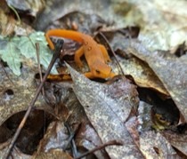
Red eft / Eastern newt (Notophthalmus viridescens) · Pennsylvania forest · 2024
红螈 / 东方蝾螈陆生幼体（Notophthalmus viridescens）· 宾夕法尼亚森林 · 2024
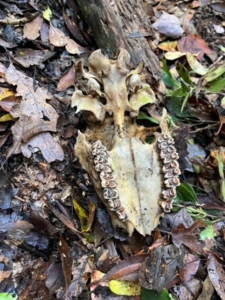
White-tailed deer remains (Odocoileus virginianus) · Pennsylvania forest · 2024
白尾鹿遗骸（Odocoileus virginianus）· 宾夕法尼亚森林 · 2024
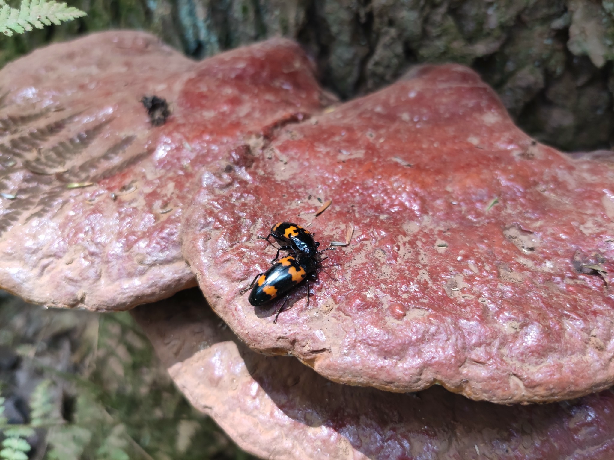
Pleasing fungus beetles (Megalodacne sp., probable) · Pennsylvania forest · 2024
拟彩菌甲 / 赏心菌甲属昆虫（Megalodacne sp.，推测）· 宾夕法尼亚森林 · 2024
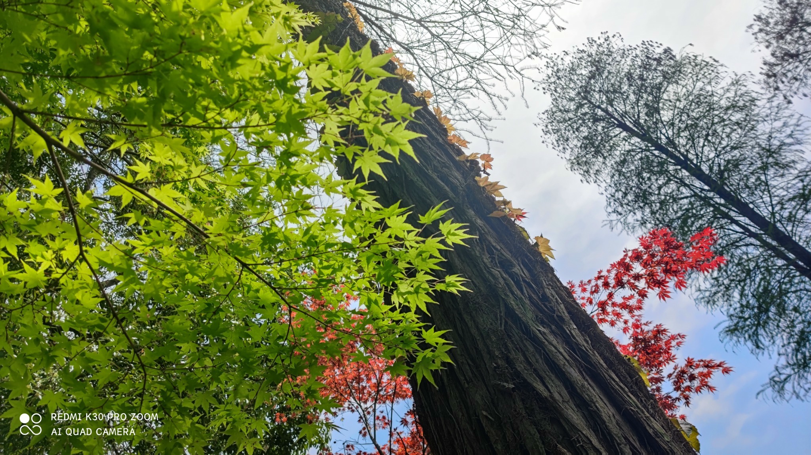
Maple canopy (Acer sp.) · Pennsylvania forest · 2024
槭树冠层（Acer sp.）· 宾夕法尼亚森林 · 2024
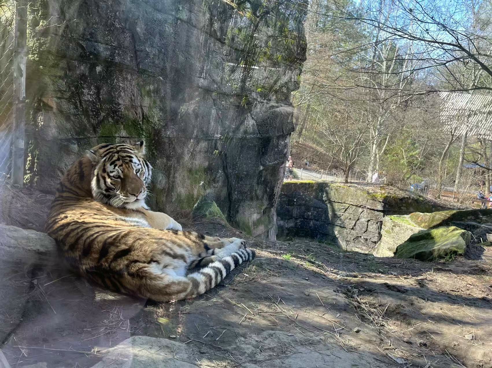
东北虎 (Panthera tigris, ssp. altaica) · Pittsburgh Zoo · 2023
东北虎 (Panthera tigris, ssp. altaica)·匹兹堡动物园 · 2023
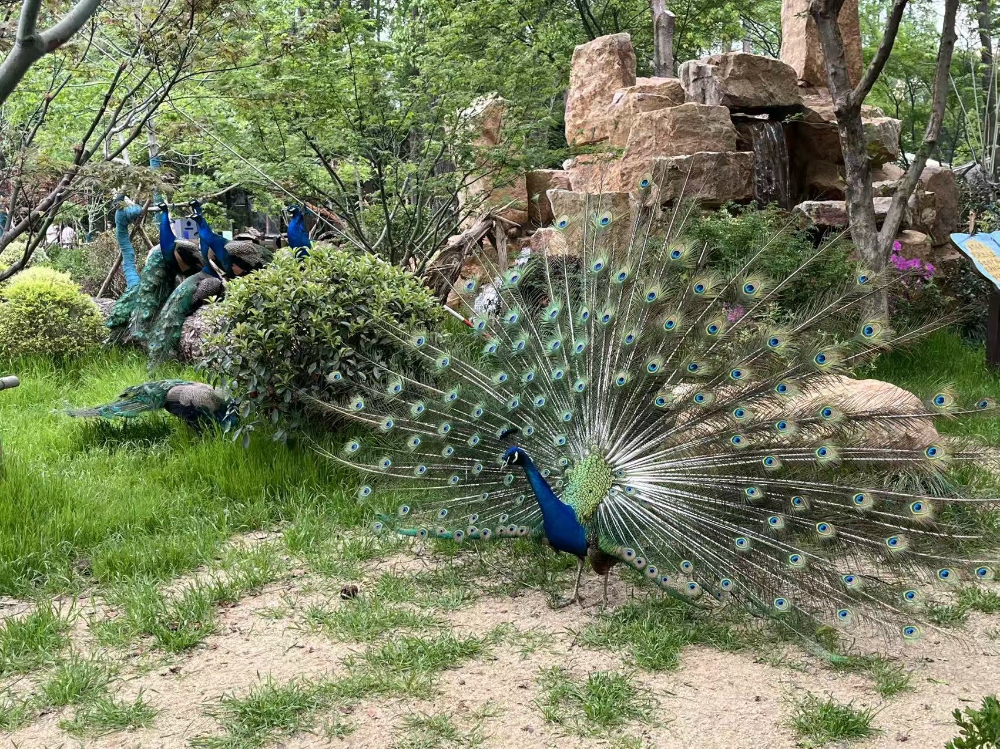
Indian peafowl (Pavo cristatus) · Shanghai Zoo · 2025
蓝孔雀 / 印度孔雀（Pavo cristatus）· 上海动物园 · 2025
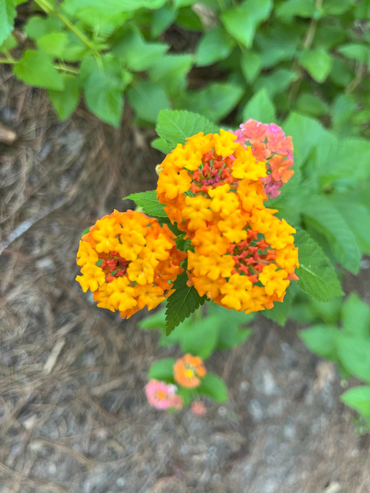
Lantana (Lantana camara) · Pennsylvania Forest · 2023
马缨丹 / 五色梅（Lantana camara）· 宾夕法尼亚森林 · 2023
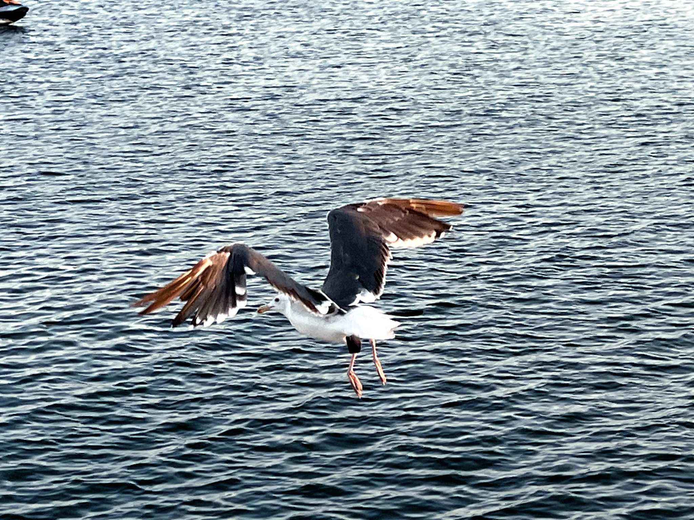
Silver gull (Chroicocephalus novaehollandiae) · Long Beach, California · 2018
银鸥（Chroicocephalus novaehollandiae）· 加利福尼亚州长滩 · 2018
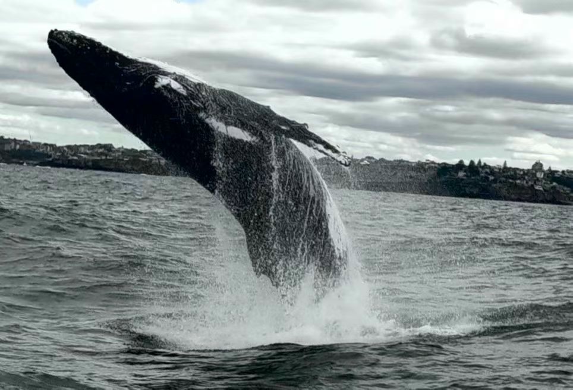
Southern right whale (Eubalaena australis) · Sydney whale-watching waters · Autumn 2025
南露脊鲸（Eubalaena australis）· 悉尼近海观鲸海域 · 2025年秋
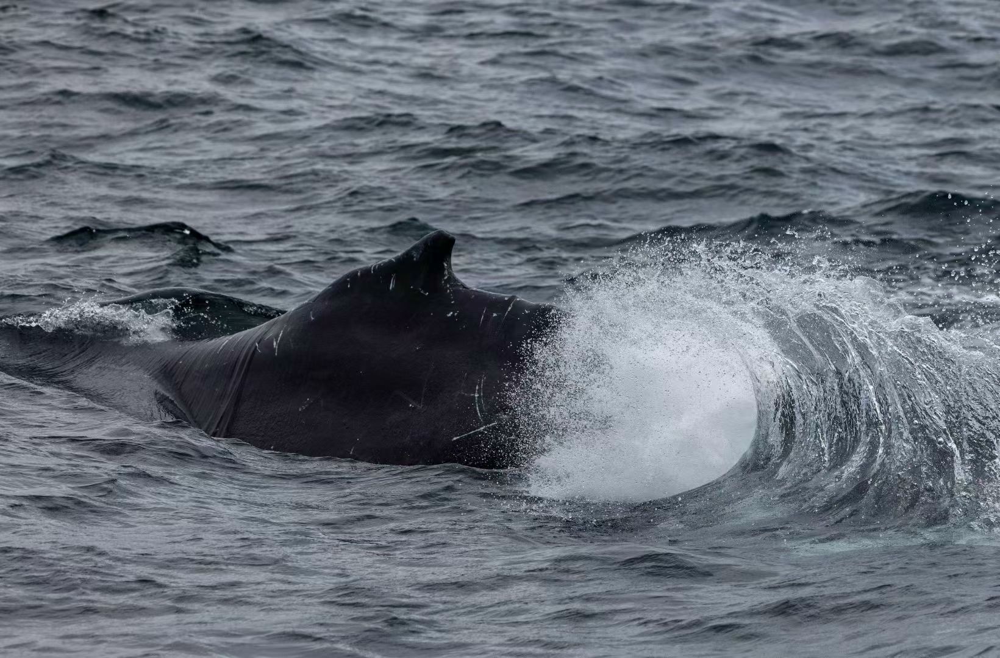
Southern right whale (Eubalaena australis) · Sydney whale-watching waters · Autumn 2025
南露脊鲸（Eubalaena australis）· 悉尼近海观鲸海域 · 2025年秋
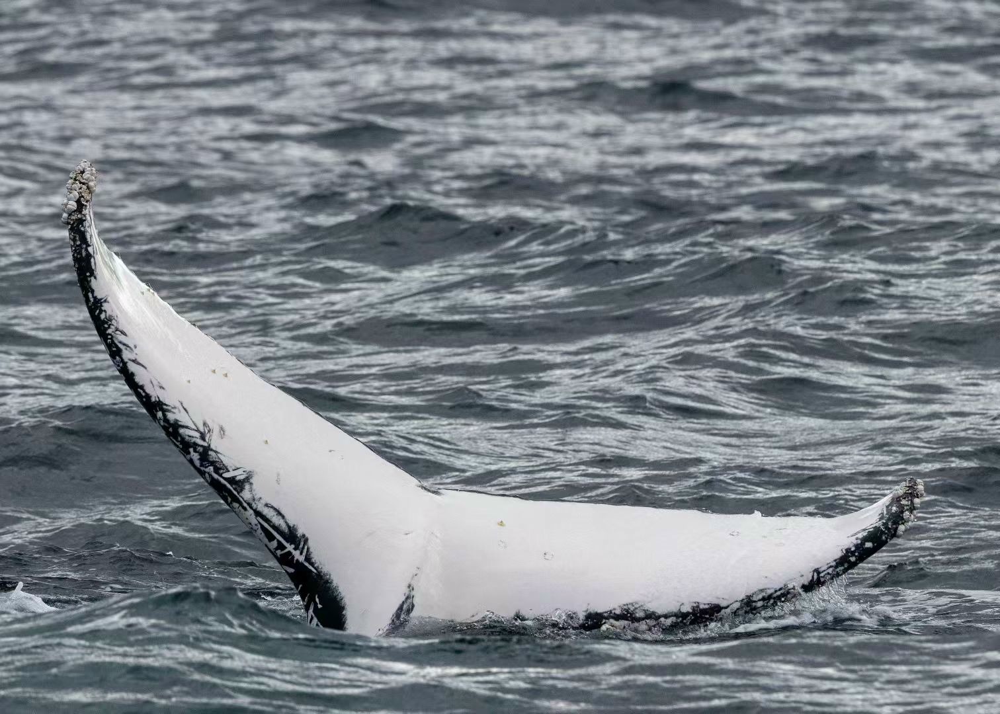
Southern right whale fluke (Eubalaena australis) · Sydney whale-watching waters · Autumn 2025
南露脊鲸尾鳍（Eubalaena australis）· 悉尼近海观鲸海域 · 2025年秋
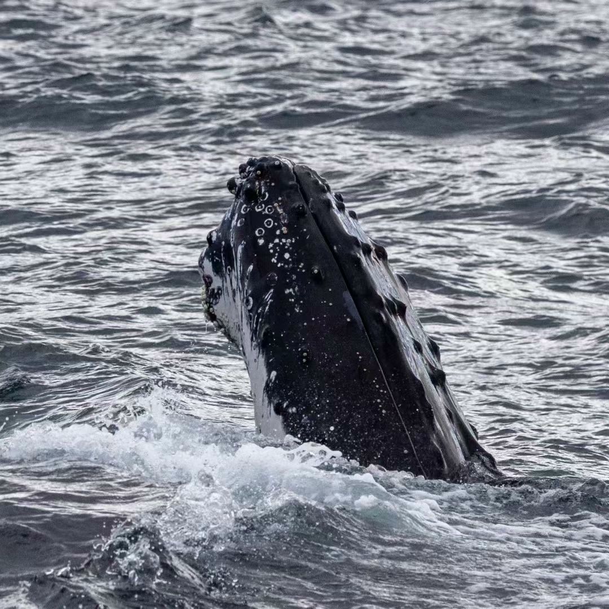
Southern right whale (Eubalaena australis) · Sydney whale-watching waters · Autumn 2025
南露脊鲸（Eubalaena australis）· 悉尼近海观鲸海域 · 2025年秋